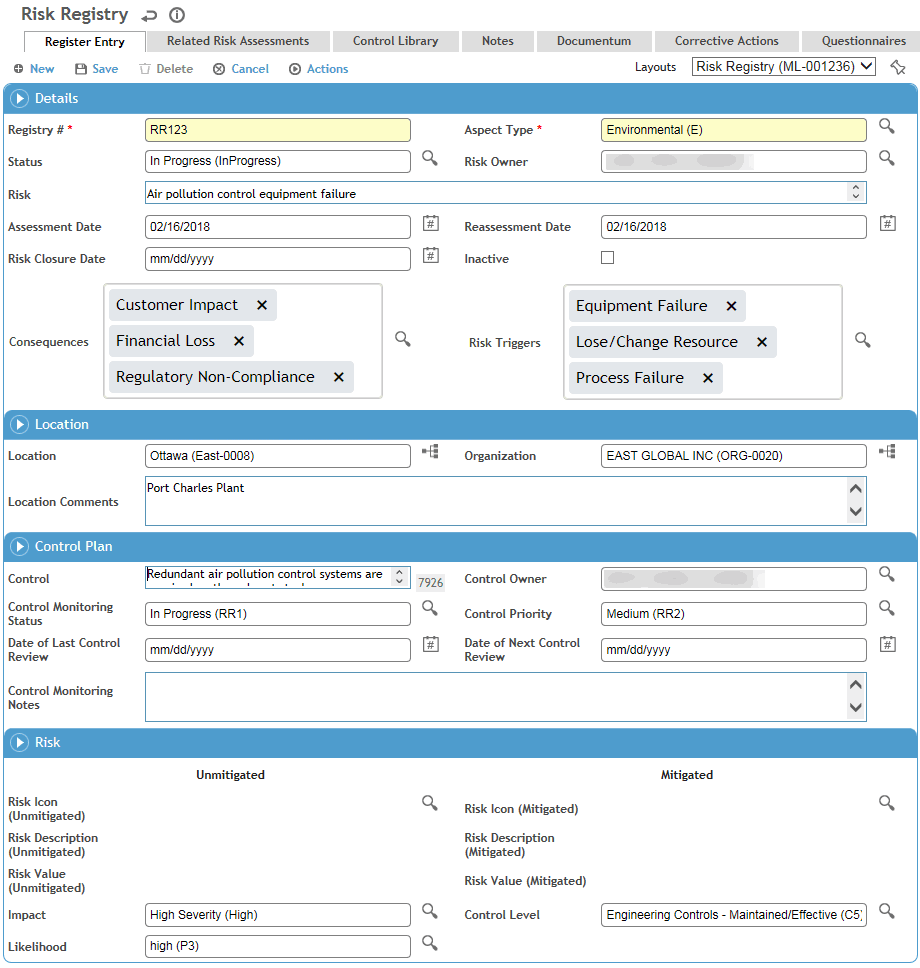
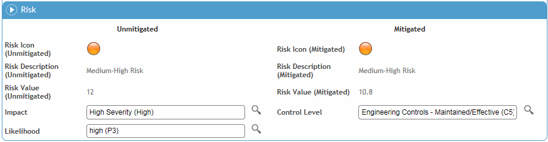

In the Environmental menu, click Risk Registry.
Use the Site Selector (at the top of the Environmental menu) to view just the records related to a particular GDDLOFB node.

Enter a Registry # according to your internal reference system.
Select the Aspect Type that encompasses the risk, such as Environmental or Safety; the layout may change to reflect options specific to your choice.
Select the Status and Risk Owner.
Enter the details of the Risk that has been identified, the Assessment Date, and any Consequences and Risk Triggers.
Identify the Location affected by the risk.
Record details of any Control in place to mitigate the risk.
In the Risk section, select the Impact of the risk (from the HazardSeverityRating look-up table), the Likelihood of it occurring (from the Probability table), and the Control Level in place to mitigate the risk.
Only values in the corresponding look-up tables that are identified as applicable to Risk Registry will be available in the above picklists.
Click Save. The Risk is calculated to reflect the unmitigated risk as well as the risk mitigated by the control.

Only values in the RiskDefinition look-up table that are identified as applicable to Risk Registry will be available for the calculation.
The Related Incidents tab lists the incident(s) that triggered the registered item. For more information, see Entering Details of an Incident.
On the Related Risk Assessments tab, record any other risk assessments that affect this risk.
On the Control Library tab, document the controls in place to prevent this risk.
Use the Notes tab to record additional information that does not fit elsewhere in the form. For more information, see Adding Notes to a Form.
Use the Documents tab to link an external file to the record to provide easy access to the file (for more information, see Linking or Importing a Document).
The Actions tab displays all findings and actions recommended (or required) as a result of this risk assessment. For information about recording a finding and its actions, see Recording a New Finding.
Use the Questionnaires tab to associate questionnaires with a record. Only questionnaires that are identified (in the Questionnaire look-up table) as applicable to Risk Registry will be available. For information about creating and administering questionnaires, see Questionnaires.